We build a framework to systematize our research on Sparse Auto Encoders (SAEs). Our infrastructure encompasses SAE training, evaluation and visualization on any Transformer model. We believe this framework will be beneficial for the mech interp community, especially for Chinese community to easily get into this field. We also illustrate some impressive features and phenomenologies GPT-2 Small exhibits.
There are way more problems remaining mysterious and we hope to share our 1-year agenda to inspire more researchers to join us in this journey.
Before diving in, we aim to offer some (maybe opinionated or even unfair) insight into the rationale and our goals behind our research direction.
We do not claim to take up any pioneering role in this field. And all of the ideas we share in this section are basically discussed by Anthropic , also by a great number of Mech Interp researchers on LessWrong and the Mech Interp Discord. There are way more names and groups we do not mention here but they all contribute non-trivially to this field.
We were often asked for one question: how will interpretability help with AI research and improve model performance or fit into AI safety? We humbly think interpretability itself is the answer. Let alone previous excellent AI safety-related articles or views by Neel Nanda and Chris Olah, imagine the future with more people working with AI assistants like the GPT family or the Claude family and more companies making billions of dollars with AI models. Any trials to opening the black box, even if only to a small extent, should be worthwhile. To be more precise, the natural curiosity to demystifying artificial intelligence and appreciation of the beauty of neural networks is enough to answer the question, though this answer may be somehow irrelevant.
As for performance improvement, an example is the inspiration induction heads give to Hungry Hungry Hippo. We may also expect mech interp to offer insights of the mechanism when Transformer language models hallucinates. We name this for Transformer Pathology and we are still in very early stage of this direction.
Despite the microscopic nature of mech interp research, it may reveal the inner structure of knowledge or belief of language models and help researchers predict or check the consistency with their macroscopic behavior. There is silver lining, e.g. studies on induction heads, that microscopic behaviors can be connected with macroscopic ones. If this mode of inspection scales up to industrial-size models, based on which we may be able to do more on red-teaming, regulation, and data-centric bug fixing (i.e. finding detrimental data sample or data source).
In this post, we will share our recent effort on a prevalent and (at least we believe is) promising tool in Mech Interp: sparse dictionary learning in Transformer language models. In the section of What Are Features, we demonstrate the rationale behind our investiment in this approach. In SAE Training and Stats, we want to share our implementation that we find is currently the most effective among approaches we have tried. We also developed an Interpretability Interface to quickly get some statistics we are interested about of a given SAE feature. The section of Features We Have Found exhibits a number of intriguing (or maybe exaggeratedly, stunning) SAE features inside of GPT-2 Small. The Agenda section introduces several directions we think are worth pursuing.
Our code base is open-sourced and available at
OpenMOSS/gpt2-dictionary, featuring a complete pipeline for SAE training, evaluation and
visualization. More importantly, one thing we have been longing for is to promote mech interp research in
Chinese community.
The term of feature can cover a wide range of concepts in machine
learning. For instance in tabular data, features are the columns of the dataset.
In the line of mech interp research, we often think of features of the
input or the model's intermidiate representation as Directions in the
Activation Space, i.e. the linear representation hypothesis, as discussed in Anthropic's Toy Models of Superposition
Sparse Dictionary Learning utilizes a sparse autoencoder to learn a
decomposition of an activation space into a set of linear and sparse
features, with an objective function to reconstruct any given
input sampled from the activation distribution.
SAEs in their nature capture the aforementioned properties and in theory
will recover the original set of features underlying in the activation
space
SAE based approaches have many advantages over other previous mechanistic
methods
Despite these inviting properties, training good SAEs is not such trivial tasks. The main resistance comes from the trade-off between sparsity and reconstruction quality. Optimizing either can lead to the other being deteriorated. Thus, a balance should be struck between the two objectives. Issues of dead features and feature suppression are two of already known obstacles to pushing the pareto front of SAEs.
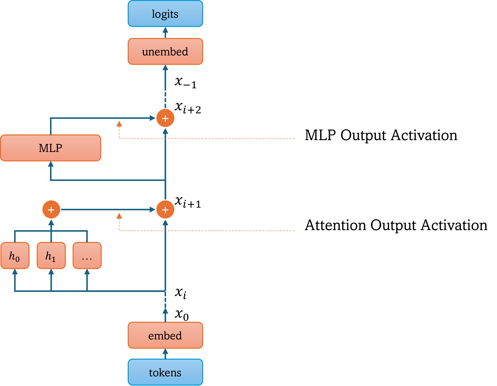
Previous mechanistic interpretability research (SAE-based or
logit lens approach) on GPT-2 Small basically focused on the residual stream, which is the
most natural choice: It's a sum of all the output of previous layers, and
can be viewed as the memory management center of the model. However, while
the residual stream intuitively gives information on a prefix sum of the
model's internal process, it doesn't provide a clear picture of how every
individual layer contributes. In contrast, the attention and MLP outputs
show directly how each layer processes the input. See our previous article
We trained an SAE on each of the outputs of the 12 attention layers and 12 MLP layers of GPT-2 Small. We follow most of the training settings from Anthropic's approach (along with their advice in February Update) and Joseph Bloom's approach, but with some modifications.
The details of pruning and finetuning will be discussed later in this post.
We have found that the attention and MLP outputs seem harder to train SAEs on. We have tried a variety of different hyperparameters and training strategies, but the results are still not so satisfying as that of the residual stream, which is mainly reflected in a lower variance explained and a higher L0 loss.
It worths to note that the we didn't observe a significant increase in cross-entropy loss even with a zero ablated layer output. It seems that GPT-2 Small is robust to the ablation of a single layer output, and shows strong self-repairing ability.
| Layer | Var. Explained | L0 Loss | Reconstruction CE Score | Reconstruction CE Loss |
|---|---|---|---|---|
| L0M | 94.45% | 14.36 | 99.69% | 3.2278 |
| L1M | 78.37% | 39.24 | 83.86% | 3.2202 |
| L2M | 81.61% | 54.82 | 77.12% | 3.2246 |
| L3M | 79.21% | 102.62 | 88.11% | 3.2208 |
| L4M | 78.58% | 156.69 | 88.26% | 3.2206 |
| L5M | 71.57% | 113.64 | 83.43% | 3.2264 |
| L6M | 77.99% | 170.18 | 89.68% | 3.2227 |
| L7M | 71.99% | 119.65 | 82.17% | 3.2283 |
| L8M | 76.72% | 141.72 | 87.13% | 3.2250 |
| L9M | 77.54% | 129.02 | 86.50% | 3.2253 |
| L10M | 76.90% | 116.80 | 79.01% | 3.2384 |
| L11M | 75.69% | 66.10 | 71.74% | 3.2637 |
| Original | 3.2130 |
| Layer | Var. Explained | L0 Loss | Reconstruction CE Score | Reconstruction CE Loss |
|---|---|---|---|---|
| L0A | 92.25% | 29.66 | 99.24% | 3.2327 |
| L1A | 82.48% | 65.57 | 97.19% | 3.2138 |
| L2A | 83.39% | 69.85 | 94.29% | 3.2150 |
| L3A | 69.23% | 53.59 | 87.00% | 3.2173 |
| L4A | 74.91% | 87.35 | 89.99% | 3.2171 |
| L5A | 82.12% | 127.18 | 97.81% | 3.2145 |
| L6A | 76.63% | 100.89 | 94.31% | 3.2158 |
| L7A | 78.51% | 103.30 | 91.32% | 3.2182 |
| L8A | 79.94% | 122.46 | 88.67% | 3.2172 |
| L9A | 81.62% | 107.81 | 89.55% | 3.2187 |
| L10A | 83.75% | 100.44 | 87.70% | 3.2201 |
| L11A | 84.81% | 22.69 | 85.49% | 3.2418 |
| Original | 3.2130 |
What do we expect a feature to be? Intuitively, a feature reflects on the existence or extent of a certain human-understandable aspect in the input, which is, a "semi-local" / compositional code to represent the input. Each of the features should be activated by a subset of the input corpus, without being too dense (i.e. activated by nearly every token) or too sparse (i.e. can hardly be activated).
However, the actual dictionary features trained end-to-end are not always so ideal. We observed that some dictionary features more like "local" codes. That is, they are activated by very specific tokens. These features are trivial and not helpful for understanding an activation pattern from a compositional perspective. Feature pruning aims to remove these trivial features and keep the more meaningful ones.
In practice, a dictionary feature will be pruned if it meets one of the following criteria:
Features meet these 3 criteria are often overlapping. We list the features that meet these criteria in the following table:
| Layer | Max act < 1 | Norm < 0.99 | Sparsity < 1e-6 | Total Pruned |
|---|---|---|---|---|
| L0M | 7284 | 522 | 2663 | 7374 |
| L1M | 128 | 1717 | 147 | 1902 |
| L2M | 1509 | 481 | 952 | 2241 |
| L3M | 4268 | 257 | 1447 | 4333 |
| L4M | 1748 | 110 | 783 | 1777 |
| L5M | 16021 | 7465 | 7052 | 16227 |
| L6M | 886 | 63 | 535 | 902 |
| L7M | 14418 | 5670 | 9374 | 14733 |
| L8M | 4033 | 1282 | 784 | 4209 |
| L9M | 4095 | 1151 | 1036 | 4445 |
| L10M | 12867 | 2186 | 10482 | 15167 |
| L11M | 179 | 419 | 81 | 588 |
| Layer | Max act < 1 | Norm < 0.99 | Sparsity < 1e-6 | Total Pruned |
|---|---|---|---|---|
| L0A | 21622 | 4125 | 11843 | 22458 |
| L1A | 19512 | 582 | 10553 | 20277 |
| L2A | 14022 | 2175 | 7164 | 16328 |
| L3A | 5793 | 4419 | 4705 | 10579 |
| L4A | 7515 | 2849 | 8653 | 12838 |
| L5A | 16096 | 2544 | 11888 | 16942 |
| L6A | 6023 | 3452 | 6707 | 11469 |
| L7A | 14304 | 3148 | 10456 | 17019 |
| L8A | 16969 | 979 | 11141 | 17506 |
| L9A | 17655 | 2528 | 7340 | 18417 |
| L10A | 17141 | 2845 | 9307 | 18435 |
| L11A | 15577 | 2053 | 12117 | 17971 |
Fairly large proportion of features are pruned after training. We can see 91.4% of the features are pruned in Layer 0 Attention Output. An average of 67.9% of the features are pruned in the attention outputs, and 25.1% in the MLP outputs. The larger proportion of pruned features in the attention outputs may tell us that the attention output objectively contains fewer independent features.
Despite the large proportion of pruned features, we didn't observe a significant loss in the reconstruction quality. The variance explained and cross-entropy loss remain largely unchagned in most layers. This indicates that our pruning criteria are effective in removing the trivial features.
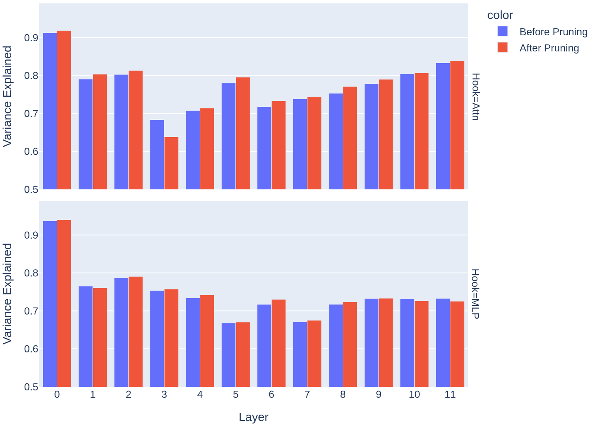
Feature suppression
refers to a phenomenon where loss function in SAEs pushes for smaller
feature activation values, leading to suppressed features and worse
reconstruction quality. Wright and Sharkey deduced that for an L1
coefficient of
This is a significant reconstruction quality loss observed in all our trained SAEs. We find that the l2 norm of the reconstructed output have an average of 77.5% of the original l2 norm, which indicates that the feature activations are suppressed by a large margin.
To address this issue, we follow Wright and Sharkey to finetune the decoder and a feature activation scaler of the pruned SAEs on the same dataset. Only the reconstruction loss (i.e. the MSE loss) is applied in this finetuning process. Encoder weights are fixed during this process to keep sparsity of the dictionary. Finetuning may also repair flaws introduced in the pruning process, and improve the overall reconstruction quality.
We achieve an average l2 norm ratio of 89.9% after finetuning. The variance explained and cross-entropy score are increased by 3.2% and 5.1% in average, respectively. Detailed statistics are as follows:
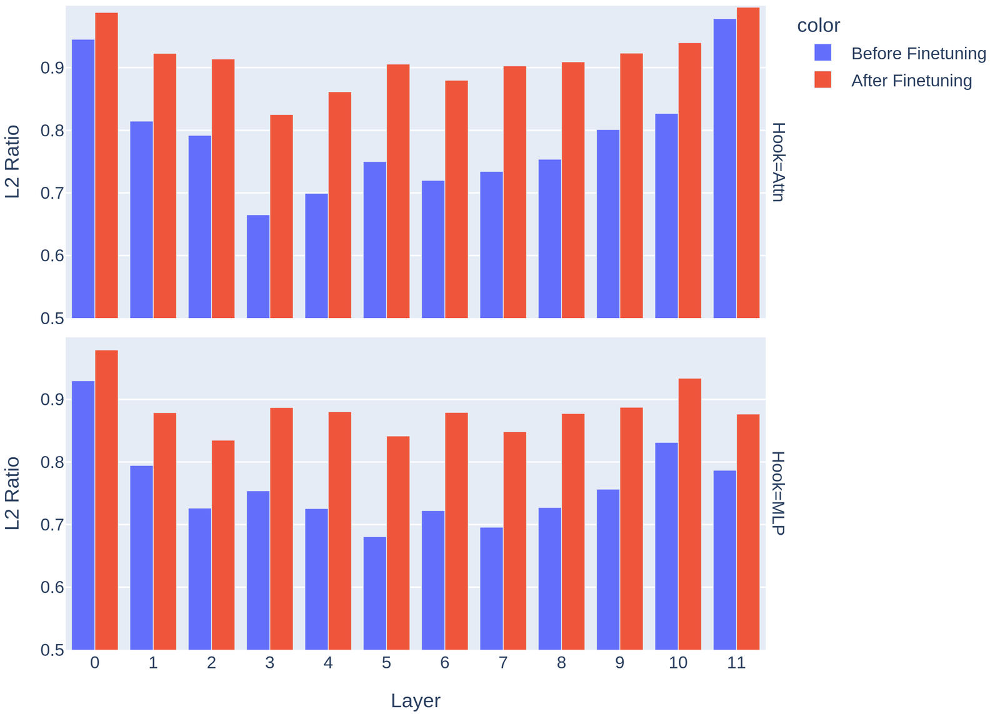
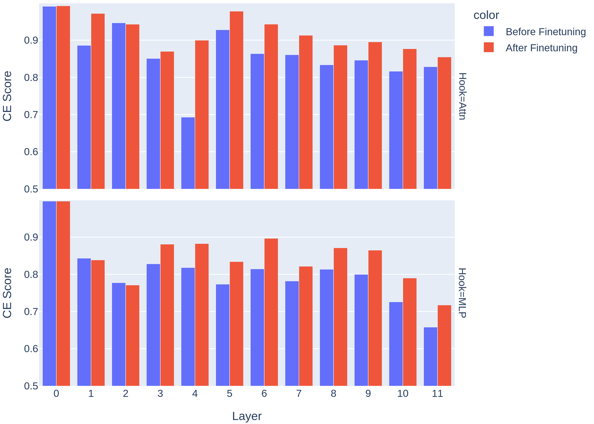
We want to further discuss some widely-used training tricks and correlating dynamics we observed during the training of SAEs on GPT-2 Small. We conducted a series of extra experiments on L4M, a medium MLP layer which is comparatively hard to train on, to investigate the effects of different training settings.
The first trick we want to study is Ghost Grads, which is a substitute for neuron resampling to make dead features live again. While this method is crucial for rescuing dead features: dead features cannot receive gradients so they cannot recover by themselves, we find that it may also introduce noise to the training process. In fact, it's likely to produce some "half-dead" features which always activate in a ultra low magnitude, just like those we pruned in the feature pruning process. The activation of "half-dead" features are negligible in the overall reconstruction, and low evidence are there to say that they actually represent some meaningful information.
Then it's natural to ask: what if we just let the dead features die, putting no efforts to rescue them? We conducted an experiment on L4M to compare the effects of ghost grads and no ghost grads. We find that the metric of variance explained keep the same in the first 700M tokens, when there's hardly any dead feature on either setting. However, after 700M tokens, the variance explained keep rising on the with-ghost-grads setting (and surprisingly, the rising rate becomes even higher), while it remains stable on the no-ghost-grads side. This indicates that despite the noise introduced by ghost grads, they're seemingly giving the wrong features a "second chance" to rebuild themselves and become useful.
Another question is whether to use a decoder bias. We'll be glad if a SAE without decoder bias can be trained to a good reconstruction quality, since it's simpler and easier for circuit analyses. But after all, does the decoder bias really help? We conducted another experiment on L4M to compare the effects of decoder bias and no decoder bias. It shows that at the beginning of the training, the with-bias setting soon rises to a higher variance explained. But the without-bias setting finally catches up in both L0 and ev after a total of 1.6B tokens.
It's also worthy noting that the convergent trajectory of a setting with ghost grads and without decoder bias is quite distinct and interesting. It seems to have three phases: a fast rising phase, of the first 500M tokens, where the variance explained rises rapidly to 68% and L0 drops to 120; a feature rescuing phase, of 500M to 1B tokens, where ghost grads working and ev continues to rise to 73.7%, in exchange of L0 rising to 285; and finally a sparsity phase, of 1B to 1.6B tokens, where the variance explained keeps stable (with slight decrease to 73.4%) and L0 drops again to 120. We do not train further so we cannot assert this is the final convergence point.
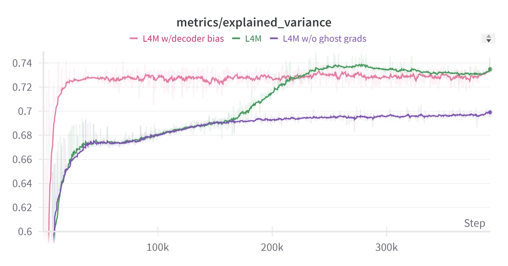
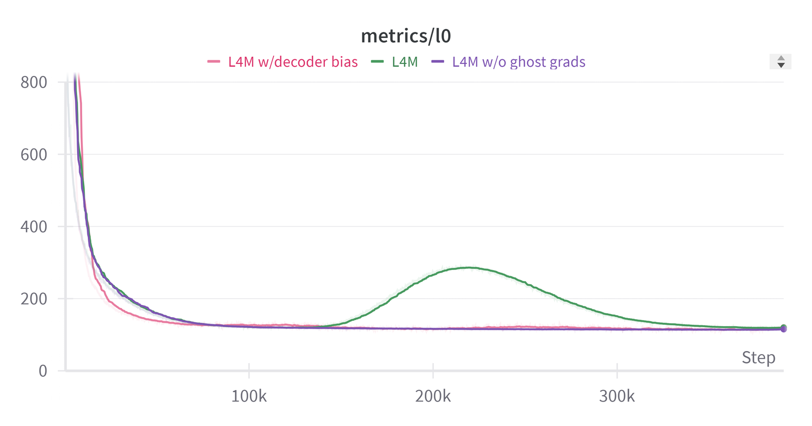
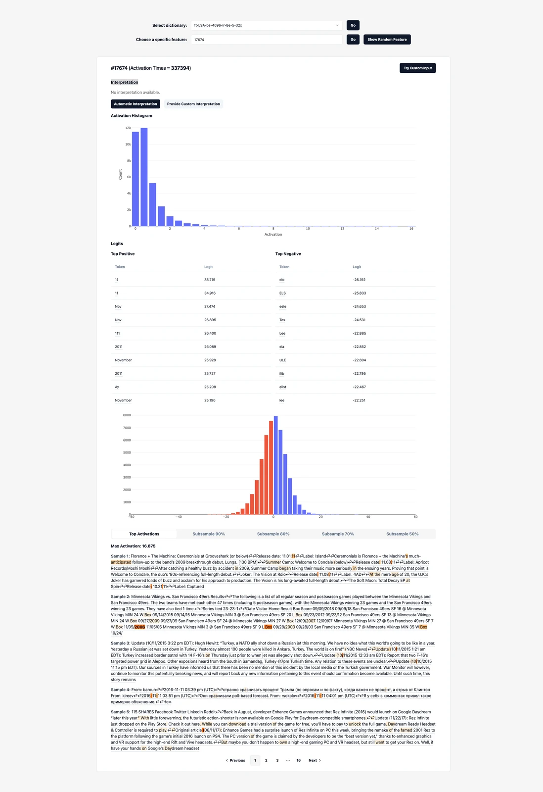
We are mainly inspired by Anthropic's feature visualizer to design our interface for interpreting each single feature. Our description of one dictionary feature contains:
Our interface is also featuring:
We report a curated case study of features we find are common or interesting. For readers who are familiar with mech interp, we believe this could be a good way to gain some kind of intuition about feature families. For example, we have found a number of features firing on start or end of attributive clauses. We also find a number of induction features.
And for readers who have not yet known too much about mech interp, we believe this can be a good way to get a sense of what kind of features are present in Transformer language models i.e. how Transformer learns to represent information in its internal.
We follow the convention in our Othello SAE circuit paper to name the Y-th feature in the X-th Attention / MLP layer as LXAY / LXMY.
It is not exciting enough in today to report to have found that neurons in the early, middle, and late layers of a large network tend to play very different types of roles, just as features at different depths of conv net vision models are known to be different. This has been reported in Anthropic's SoLU paper. Nonetheless, this can be a positive sign that SAEs are at least learning something meaningful.
L0M13637 responds to the token 'ates' in names, singular forms of verbs ending with 'ate' and even 'ates' across morphemes like in 'Bureaucratese'.
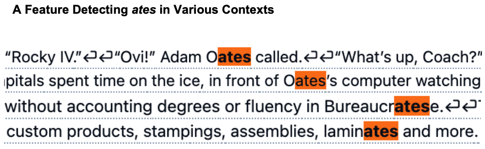
L0M3903 responds to the word process. One interesting oberservation is that direct logit attribution shows that this feature also directly contributes to the tokens that activate it via the residual stream. This is probably due to the tied embedding and unembedding in GPT2. Another intriguing phenomenon is that the form of 'process' is mostly the same in the top activation samples i.e. ' process'. While other forms of process-related tokens like ' Process|ing' and 'no-|process' only fires this feature for lower than 50% of the max activation magnitude. This at first may seem unsurprising. But under the framework of linear representation hypothesis, this is an example of how Transformer language models decide the activation value of a feature in its corresponding direction: grammatical fundamentality (or a more mundane explanation: frequency).
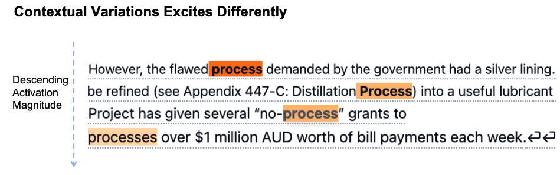
By L1M, GPT2 begins to learn some n-gram features and group phrases with similar meanings together. For example, L1M20593 responds to phrases like 'aim to', 'goal is to', 'ask for', 'want to' etc.
Anthropic's Towards Monosemanticity has reported to find Transformers learned features that interact via the token stream because of patterns in the real datasets. We have found some features related to brackets that we believe are not present in the one-layer Transformer in Towards Monosemanticity and can be deemed as an extension to the "Finite State Automata" phenomenology in real models.
L1A11421 fires on tokens inside of brackets. This feature exhibits behavior of a stack. When the number of left brackets is more than the number of right brackets, the feature will activated after the right bracket(s). And as we increase the number of right brackets, the firing range of this feature is reduced.
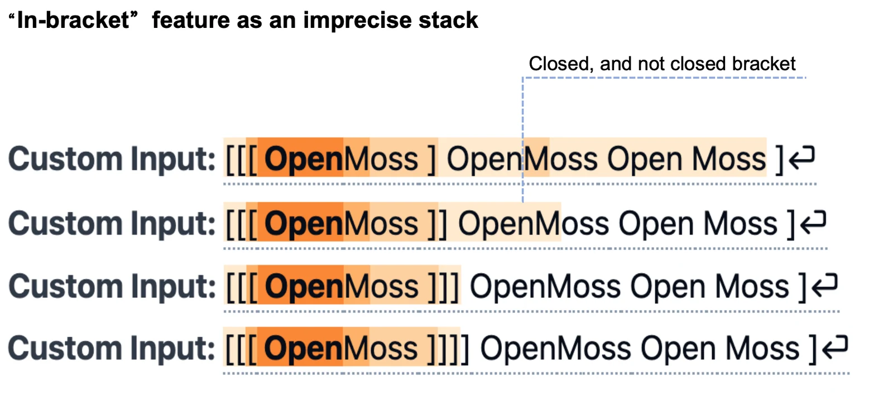
We believe the key components of bracket-related circuit also contain a number of features responding to left or right brackets. For instance, L0M18327 fires at left brackets and L0A15911 at right brackets. We plan to dig in more on this circuit with the analysis framework we introduced in our Othello SAE circuit paper and will report more findings in the future.
L3M19583 seems to respond to periods at the end of IT-related sentences. Despite our efforts on manual search, we failed to find any feature before L3M firing on sentence level.
After L3M, we start to find a number of features firing on start or end of clauses.
L4A21554
and L4A7838
respond to the conjunctions indicating the start of attributive clauses or descriptive prepositional phrases.
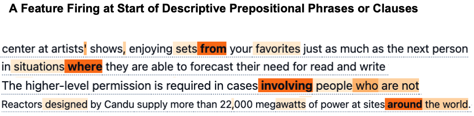
Induction Heads are believed to be an important component for Transformer language models to reduce loss and perform in-context learning. We have found a number of features that seem to implement the two parts of induction heads: previous-token features and induction features.
L3A12618 and L3A220 serve as previous-token features for 'U' and locations, respectively.
Correspondingly, there are some features in higher-layer attentions to perform induction. For example, L5A20004 performs induction to enhance the logits of upper-case letters.
There are many more features in L5A we believe to perform induction. Previous study on attention SAEs by robertzk et al. has identified L5A Head 1 as an induction head. Therefore, we believe L5A is an important place for GPT-2 to do induction. Additionally, a rough oberservation about these features is that they are one of the earliest features to directly contribute to the logits in an interpretable way.
Circuit discovery with dictionary features, as introduced in our Othello SAE paper, is promising to analyze local circuits in that we can figure out how a lower-level feature is transformed into a higher-level one. Furthurmore, we can also make clear which heads constitute the circuit. We plan to release a more detailed report on induction features and the circuits they form in the future.
The mission of mech interp research involves discovering beautiful structures in neural networks and identifying probable dangerous abilities that may affect human society. Most of features we introduce in this post are ones we find interesting for GPT2 to represent. We have also found a number of crime-related features L4A23556, L7A20944 and L10M12892 , which may be of use in larger scale mech interp research for safety.
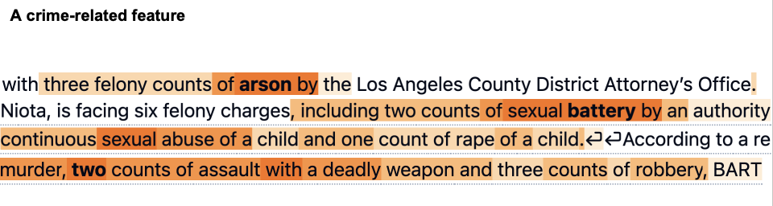
Another feature we find intriguing is the Future Feature L6A6184.
The feature is identifying the usage of future tense in the text like 'will', 'next', 'project to' etc.
As we investigate more about this feature, we find that it also fires on upcoming events like the 2022 World Cup.
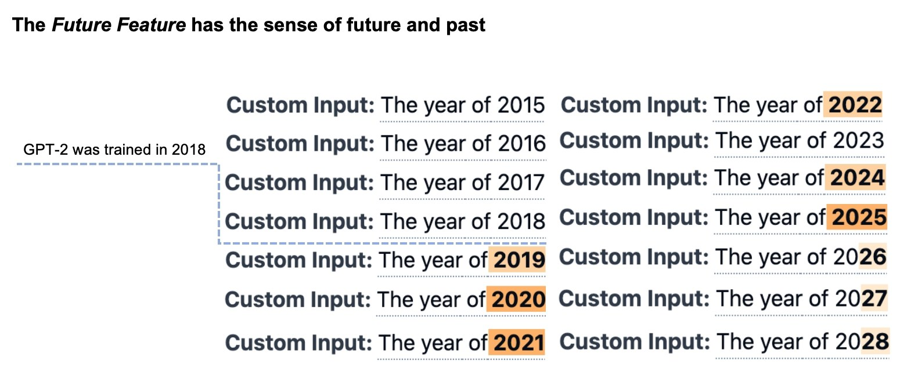
As the model goes into its deeper layers, SAE features exhibit more interpretability in their direct contribution
to the final logits instead of responding to inputs
We currently do not know what is going on in this seemingly calibrating feature. We seek to find out more about this in our ongoing circuit analysis.
In near future, our center project encompasses two topics: Science of Dictionary Learning and Circuit Discovery with SAE Features. We are also interested in multiple side-branches such as Discovering Mamba Motif & Universality, SAEs for Training Dynamics and Expertise of Experts. By saying that the former two directions are centric and the latter three are in side-branches, we do not mean any project is priviledged over any one another. The center project treats SAEs as the object to be studied and the other two use SAEs as tools to offer more findings in mainstream language models. The aforementioned projects are all ongoing and will be published at OpenMOSS.
Fukang Zhu, Xuyang Ge, Zhengfu He
Dictionary Learning is in fact not a new approach. However existing literature does not satisfy to perfectly help with attacking superposition and extracting monosemantic features with negligible loss or high sparsity. Moreover, one lesson from Anthropic's tanh experiment is that even if some methods help improve these existing metrics, it may deteriorate interpretability, which lack a reliable metric to test on.
Despite these possible obstacles and pitfalls, we are still carefully optimistic about SAEs. In the upcoming year, our plans on improving SAEs include but are not limited to:
KL-guided SAE Training: Wes Gurnee shared in a recent post that SAE reconstruction errors are empirically pathological i.e. a random error of the
same norm of SAE error stochastically leads to lower recovered cross-entropy loss. However, if we replace
the original activation
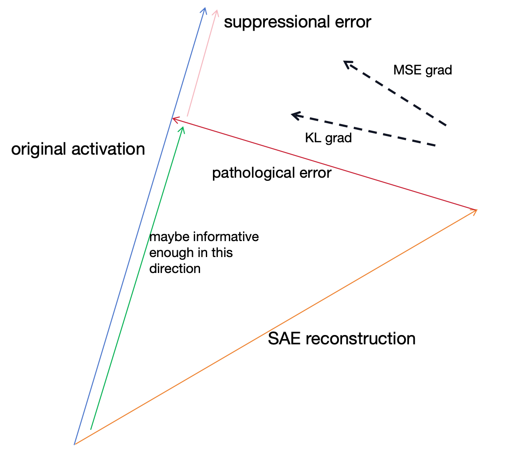
We conjecture that feature suppression itself is not harmful but will have impact on training dynamics. The widely-used Mean Square Error is isotropic and will optimize both suppressional and pathological error, which may misalign with recovered ce loss and thus lead to suboptimal training trajectory.
We wonder if this issue can be mitigated by mixing a third loss, other than sparsity constraint and MSE, of the KL divergence between the original logits and the SAE-recovered logits. This KL-guided training may force SAE to capture more features to minimize the pathological errors in cost of errors in directions less important with respect to recovered ce loss. There is also a caveat that this loss is actually introducing future computations into SAE reconstruction of a given activation space i.e. SAEs may somehow learn to represent features in very late layers to perform next token prediction and fail to faithfully capture the real features.
This idea is also mentioned in Lee Sharkey's Agenda, in which it's known as e2e SAEs.
Solving Feature Suppression by Seperating MSE & Sparsity: The hidden layer of vanilla SAE is both used for reconstruction and maintaining sparsity. There may be some kind of tangling here. Since suppression itself is not pathological, and we still see moderate improvement by finetuning against suppression, we suspect suppression does not directly affect recovered ce loss but instead impact training trajectory. To solve this problem, we propose to parameterize the activation of a feature with a seperate encoder matrix, which leads to a GLU architecture for SAEs.
We have already observed non-trivial Pareto improvement in the space of recovered ce loss and L0. We intend to report more on this once we vetted them further.
Fixing the Degree of Freedom of Activation Norm: We have observed that both finetuned and GLU-based SAEs can mitigate the issue of feature suppression, but both not completely. We speculate a more fundamental mechanism of feature suppression.
As mentioned in Architecture and Training Overview, we normalize the activation vectors to have L2 norm equal to sqrt(n_dense). Therefore the input of our SAEs all lie on one hypersphere. We believe the following explanation also holds even if we do not do the normalization.
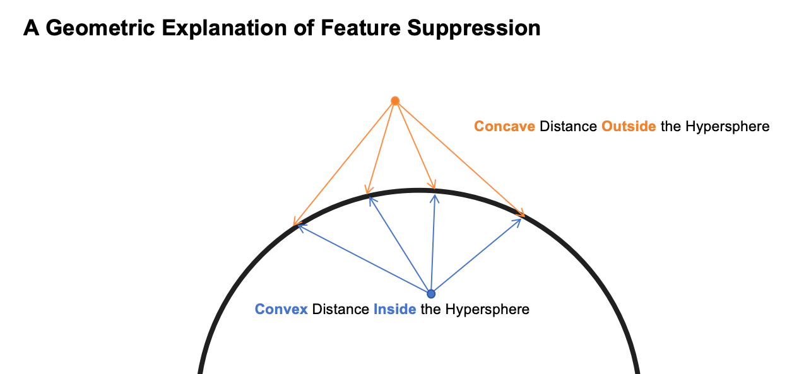
It is possible that a fundamental motivation for SAEs to reconstruct inside of the hypersphere is that points inside have convex distance to the hypersphere. Since we use MSE as the loss function, errors in directions perpendicular to the original activation will result in lower MSE loss.
We wonder if removing this degree of freedom along the direction of the original activation i.e. reducing MSE loss to some kind of angular distance like cosine similarity may help improve SAE training. This in theory will eradicate feature suppression. We are still not clear if this may cause other problems.
Xuyang Ge, Zhengfu He
Our latest Othello SAE circuit paper mainly depicts our vision for circuit discovery in Transformers. We believe Predicting Future Activations may serve as a substitute for our imperfect Approximate Direct Contribution to decompile MLP blocks. Our pilot study has shown that training SAEs which take in pre-MLP residual stream activations and predict MLP outputs is feasible and can produce interpretable features.
Our plan on circuit analysis starts from simple local circuits like the in-bracket feature and go on with more global circuits like induction heads and Indirect Object Identification. If we manage to validate our circuit discovery pipeline on these widely-studied tasks, we would like to focus more on behaviors with unclear mechanism e.g. logit calibration and undesired behaviors i.e. Transformer Pathology.
Our methodology mainly utilizes direct contribution and conduct evaluations with respect to ablation. We currently believe this approach gets rid of out-of-distribution problems and consequent self-repair behaviors of language models.
Junxuan Wang, Xuyang Ge, Zhengfu He
Among the family of language models with State Space Models, Mamba has received most attention. We plan to conduct a systematic study of Mamba SAEs to figure out the following questions:
Universality: A recent paper by Arnab Sen Sharma et al. has utilized activation patching to locate factual associations and perform ROME editing to test the causal effect of their identified components. Their results offer a positive evidence for universality that when it comes to factual recall, Transformers and Mambas share many similarities.
We want to use SAEs to find more evidence as such. Our expectations cover from the predictable ones e.g. early layers as extended word embedding to ones we are more curious about e.g. SSM state superposition.
Zhengfu He
We are also interested in understanding the training trajectory of language models with SAEs. By investigating features in the progress of model training, we expect to observe the following types of signal of structure:
Wentao Shu, Zhiyuan Zeng, Zhengfu He
A recent X post has posed a challenge to utilize SAEs to find some kind of Branch (Expert) Specialization in MoE models. We had come up with similar ideas to introduce this new and powerful tools into understanding the expertise inside of expert models. Though we do not assume a priori that all or most features are specialized to one expert, we believe there exist some rationale behind Mixture-of-Experts models to internally assign experts and organize the activation space.